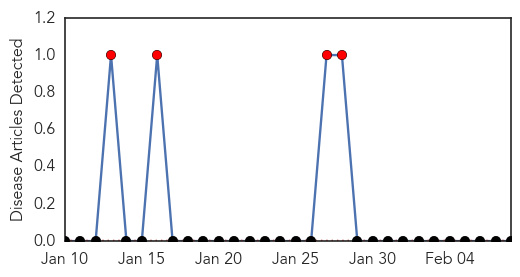
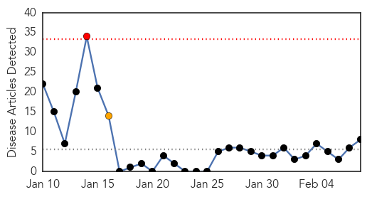
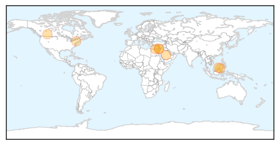

Bubonic Plague
30-Day Web Trend
30 alerts, 0 warnings

30-Day Twitter Trend
0 alerts, 0 warnings

Article Locations

Article Confidences

Top Articles:
-
No articles found for Feb 08, 2014
Top Tweets:
-
No tweets found for Feb 08, 2014
Swine Flu
30-Day Web Trend
1 alerts, 1 warnings

30-Day Twitter Trend
2 alerts, 0 warnings

Article Locations
Article Confidences

Top Articles:
- 0.999
- Jordanian dies of MERS virus
- 0.999
- Jordanian dies of MERS virus: report
- 0.998
- Malaysian state still on alert following outbreak of H1N1, Others news, Health News, AsiaOne YourHealth
- 0.997
- Calgary vet school confirms pet cat died of H1N1 virus
- 0.995
- H1N1 outbreak: Be quick with updates, Rundi told
- 0.992
- Hospitals declare emergency in Gharbiya after swine flu death
- 0.984
- the edge of knowledge
- 0.908
- Majority of American Adults Skip Vaccination, Study Finds
Top Tweets:
-
No tweets found for Feb 08, 2014